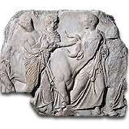

| |
The Parthenon and its sculptures
The
temple known as the Parthenon was built on the Acropolis of Athens between
447 and 432 BC. It was part of a vast building programme masterminded
by the Athenian statesman Perikles (died 429 BC). Inside the temple stood
a colossal statue representing Athena, patron goddess of the city. The
statue, which no longer exists, was made of gold and ivory by the celebrated
sculptor Pheidias.
The building itself
was decorated with marble sculptures representing scenes from Athenian
cult and mythology.
To find out more
about the Parthenon and its sculptures come and visit us. For more information
online explore Compass - our
collections database.
Parthenon
papers
(All pdf files will open in
a new window. Please close the window to return to this page.)
|
|

Young
cow and herdsmen from the south frieze of the Parthenon
|
|
|
|